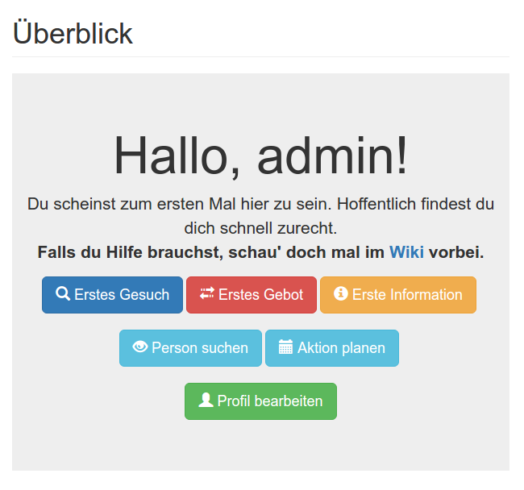
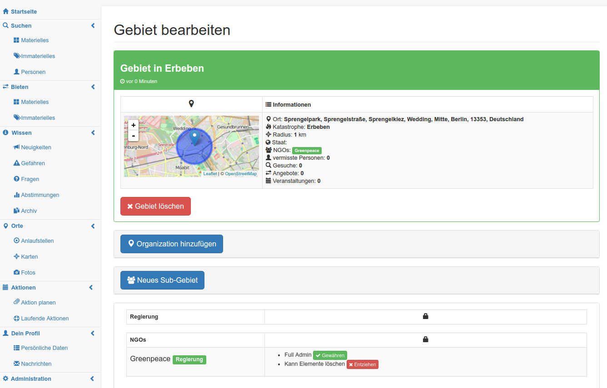

Sprint Planning #4
Emergency Notifications
Programmierpraktikum: Soziale Netzwerke
Jasper Bernhardt
Elias Grünewald
Priska Kohnen
Bruno Kortowski
Nikita Krohmer
Nikias Praast
Franz Tscharf
Vincent Ulitzsch
Elias Grünewald
Priska Kohnen
Bruno Kortowski
Nikita Krohmer
Nikias Praast
Franz Tscharf
Vincent Ulitzsch
EN152
Sommersemester 2016
Complex and Distributed IT Systems
Technische Universität Berlin

Complex and Distributed IT Systems
Technische Universität Berlin
Sprint #3:
Rückblick

- Bugfixing
- Deploying
- Volltextsuche
- Eventplanung
- Gebiete claimen
- Fehlermeldungen
- Rechtemanagement
- Wiki/Dokumentation
Sprint #3: Gebiete/Rechtemanagement

Sprint #4:
in progress
- Filter
- Wissen
- Echtzeit-Chat
- Melden-Funktion
- Benachrichtigungen
Sprint #4:
Planungen
-
Bugfixing
- Doppelregistrierung
- Weiterleitungen
- Löschen/Bumpen
- Design
- mobile Ansicht
- eigene 404-Seite
Sprint #4:
Planungen
- Optimierung
- URL-Auflösung
- Datenvolumen sparen
- Datenbankzugriffe
- Intelligenz
- Sprach- oder Bilderkennung
Sprint #4:
Workflow
- Aufräumen
- Feinschliffe
- Dokumentation
- Datenbankmigration